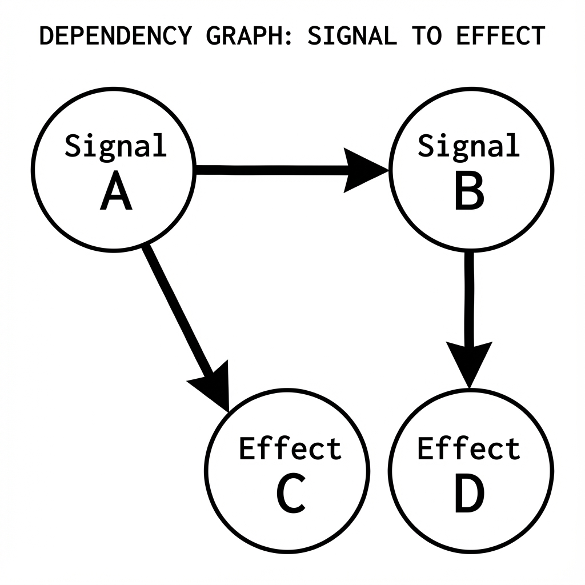

Introduction to PhilJS
PhilJS is a TypeScript-first web framework designed for performance and scalability through architectural optimization rather than runtime heuristics.
System Overview
PhilJS combines the component model of libraries like React and Solid with Zero-Hydration Resumability, a technique that eliminates the initialization costs associated with traditional Single Page Applications (SPAs). This allows applications to maintain constant Time-to-Interactive (TTI) regardless of application size.
 Figure 1-1: The PhilJS Resumability Engine Architecture
Figure 1-1: The PhilJS Resumability Engine Architecture
The framework is built on fine-grained reactivity (Signals), ensuring that state updates propagate directly to the DOM without requiring a Virtual DOM diffing process. This approach integrates server-side rendering (SSR) and client-side interactivity into a unified model.
Try It Yourself
Here’s a simple PhilJS example you can edit and run right in your browser:
const count = signal(0);
const increment = () => {
count.set(count() + 1);
};
console.log('Initial count:', count());
// Simulate clicking the button 3 times
increment();
console.log('After increment:', count());
increment();
console.log('After second increment:', count());
increment();
console.log('After third increment:', count());
Try modifying the code above! Change the initial value, add more increments, or experiment with the signal API.
Core Design Principles
1. Resumability & Execution Latency
Unlike frameworks that hydrate the entire application state on the client, PhilJS utilizes resumability. The application state is serialized into the HTML, allowing the client to resume execution from the server’s last state without re-running initialization logic.
Technical implications:
- Elimination of Hydration Phase: No blocking main-thread time for component re-execution.
- Lazy Execution: Event handlers and component logic are loaded only upon interaction.
2. Fine-Grained Reactivity (Signals)
PhilJS uses signals as the primary state primitive. This dependency-tracking system allows for O(1) updates to the DOM.
Example:
// A counter that updates without re-rendering anything else
const count = signal(0);
<div>
<h1>My App</h1>
<p>Count: {count()}</p> {/* Only this text node updates */}
<button onClick={() => count.set(c => c + 1)}>+</button>
</div>

Figure 1-2: Virtual DOM Diffing vs. Direct Signal UpdatesThis model avoids the CPU overhead of Virtual DOM reconciliation.
3. Observability & Cost Attribution
PhilJS includes a native cost tracking module. This allows developers to measure the runtime cost (renders, data transfer) of individual components in production.
 Figure 1-3: Time to Interactive (TTI) Comparison: Hydrated vs. Resumable
Figure 1-3: Time to Interactive (TTI) Comparison: Hydrated vs. Resumable
import { useCosts } from '@philjs/core';
export function Dashboard() {
const costs = useCosts({ component: 'Dashboard' });
return (
<div>
<p>Render Count: {costs.renders}</p>
</div>
);
}
4. Resilient Runtime Strategy
The Self-Healing Runtime operates as a supervisor layer. It employs strategies such as circuit breakers and isolation boundaries to prevent partial UI failures from crashing the entire application context.
- Circuit Breakers: Isolation of failing components.
- Recovery: Automatic re-initialization of crashed component trees.
5. TypeScript 6 First
PhilJS is written in TypeScript and designed for TypeScript 6+. Every API is fully typed with excellent inference and leverages the latest TypeScript features.
// Props are automatically inferred with TypeScript 6 features
function UserProfile({ user, onSave }: {
user: { name: string; email: string };
onSave: (user: User) => Promise<void>;
}) {
const editing = signal(false);
// TypeScript 6 knows editing is Signal<boolean>
// Full autocomplete and type checking everywhere
}
// Using TypeScript 6 satisfies operator for config
const config = {
theme: 'dark',
version: 2,
} as const satisfies AppConfig;
// Using NoInfer for better generic inference
function createStore<T>(initial: NoInfer<T>): Store<T> {
return new Store(initial);
}
TypeScript 6 Benefits:
- Isolated declarations for faster builds
- Enhanced
satisfiesoperator NoInfer<T>utility type for better generics- Improved const type parameters
- Better auto-imports and go-to-definition
6. Server Functions = Zero Boilerplate APIs
Call server code from your components like regular functions - PhilJS handles everything.
// server.ts
export const getUser = serverFn(async (id: number) => {
// This runs ONLY on the server
const user = await db.users.findById(id);
return user;
});
// client.tsx
import { getUser } from './server';
export function UserProfile({ userId }: { userId: number }) {
const user = await getUser(userId);
return <div>{user.name}</div>;
}
No need for:
- Separate API routes
- REST endpoint definitions
- GraphQL schemas
- API client code
- Manual serialization
Just call the function. PhilJS handles the network request, serialization, error handling, and type safety automatically.
7. Islands Architecture for Maximum Performance
Use islands to ship minimal JavaScript. Only interactive components get hydrated - the rest is pure HTML.
// This button is interactive (small JS bundle)
<Counter client:load />
// This content is static HTML (0 JS)
<BlogPost post={post} />
// This loads only when visible (lazy loaded)
<Comments client:visible />
 Figure 1-4: The Islands Architecture: Static Seas with Interactive Islands
Figure 1-4: The Islands Architecture: Static Seas with Interactive Islands
Results:
- 90% less JavaScript shipped
- Faster page loads
- Better Core Web Vitals
- Lower bounce rates
8. Batteries Included
PhilJS comes with everything you need:
- ✅ File-based routing with layouts and nested routes
- ✅ Data fetching with caching and invalidation
- ✅ Form handling with validation and server actions
- ✅ Authentication patterns built-in
- ✅ Real-time updates via WebSockets/SSE
- ✅ i18n with locale routing
- ✅ Testing utilities for components and integration
- ✅ DevTools with time-travel debugging
- ✅ Static generation with ISR
- ✅ Image optimization
- ✅ Code splitting automatic and manual
No decision fatigue. No hunting for packages. Everything works together perfectly.
Who Should Use PhilJS?
Perfect For:
Startups and MVPs
- Ship fast with minimal code
- Scale without rewriting
- Built-in cost tracking helps manage budgets
- TypeScript catches bugs before users do
E-commerce Sites
- Fast page loads = higher conversion
- Resumability = instant interactivity
- Islands = minimal JavaScript
- Great Core Web Vitals = better SEO
Content Sites and Blogs
- Static generation for speed
- Dynamic data when needed
- Excellent SEO out of the box
- Great authoring experience
Enterprise Applications
- TypeScript-first for large teams
- Predictable performance at scale
- Cost tracking for accountability
- Excellent tooling and DevTools
Mobile-First Applications
- Minimal JavaScript = better mobile experience
- Fine-grained reactivity = smooth animations
- Works great on slow networks
- Battery-friendly
When You Need Extensions
You Need Additional Ecosystem Features
- PhilJS is new and the ecosystem is expanding quickly
- If a dependency is missing, build a PhilJS plugin or adapter
- Use the compatibility layers during migration
You’re Building a Desktop App
- Use PhilJS Desktop or PhilJS Native packages
- Share components between web and desktop targets
You Need a JavaScript-Only Stack
- PhilJS is TypeScript-first and requires TypeScript 6+
- Keep everything in TypeScript for consistency and safety
How Is PhilJS Different?
vs React
What’s Better:
- ⚡ 10x faster updates (signals vs virtual DOM)
- 📦 Smaller bundle sizes (no runtime overhead)
- 🚀 Zero hydration (resumability vs hydration)
- 💰 Built-in cost tracking
- 🎯 Server functions (vs REST/GraphQL)
Trade-offs:
- 📚 Smaller ecosystem (newer framework)
- 🔄 Different mental model (signals vs hooks)
- 🛠️ Fewer third-party components
PhilJS path for React-heavy stacks:
- Use the PhilJS compatibility layers while migrating
- Wrap legacy components behind PhilJS routes
- Replace hooks-based state with signals over time
vs Vue
What’s Better:
- ⚡ Faster (fine-grained reactivity)
- 🚀 Resumability (vs hydration)
- 📝 TypeScript-first (better inference)
- 🎯 Server functions built-in
Trade-offs:
- 📚 Newer with less documentation
- 🎨 No template syntax (JSX only)
PhilJS path for template-heavy teams:
- Keep the core UI in PhilJS and wrap for legacy apps
- Use PhilJS components as the long-term source of truth
- Expand the PhilJS ecosystem with targeted adapters
vs Svelte
What’s Better:
- 🚀 Resumability (instant interactivity)
- 💰 Cost tracking
- 🌊 Better streaming SSR
- 🏝️ Islands architecture built-in
Trade-offs:
- 🎨 No template syntax (JSX vs Svelte syntax)
- 📚 Smaller community
PhilJS path for Svelte-style DX:
- Use signals and islands for compiler-friendly UI
- Keep SSR and streaming on by default for performance
- Adopt PhilJS stores for predictable state
vs Next.js
PhilJS includes everything Next.js does plus:
- ⚡ Fine-grained reactivity (faster updates)
- 🚀 Resumability (zero hydration)
- 🏝️ Islands architecture
- 💰 Cost tracking
PhilJS path for Next.js migrations:
- Use the PhilJS compatibility layer for React components
- Move routing and data loading into PhilJS modules
- Replace Next.js-specific APIs with PhilJS SSR/ISR
Quick Feature Overview
Requirements
- Node.js 24+ (Node 25 supported) - Required for native ESM, Promise.withResolvers(), Object.groupBy()
- TypeScript 6+ - Required for isolated declarations and enhanced inference
Reactivity
import { signal, memo, effect } from '@philjs/core';
const count = signal(0); // Reactive state
const doubled = memo(() => count() * 2); // Computed value
effect(() => console.log(count())); // Side effect
Components
export function Welcome({ name }: { name: string }) {
return <h1>Hello, {name}!</h1>;
}
Server Functions
const saveUser = serverFn(async (user: User) => {
await db.users.save(user);
});
Routing
src/routes/
index.tsx → /
about.tsx → /about
users/
[id].tsx → /users/123
Data Fetching
const user = createQuery(() => fetchUser(userId()));
Forms
<form action={createUser}>
<input name="name" required />
<button>Create</button>
</form>
Getting Started
Ready to build something amazing? Let’s go:
- Installation - Get PhilJS installed in 30 seconds
- Quick Start - Build your first app in 5 minutes
- Tutorial - Learn by building a game
Community and Support
- GitHub: github.com/philjs/philjs
- Discord: discord.gg/philjs
- Twitter: @philjs
- Stack Overflow: Tag with
philjs
License
PhilJS is MIT licensed. Free for personal and commercial use.
Next: Installation →